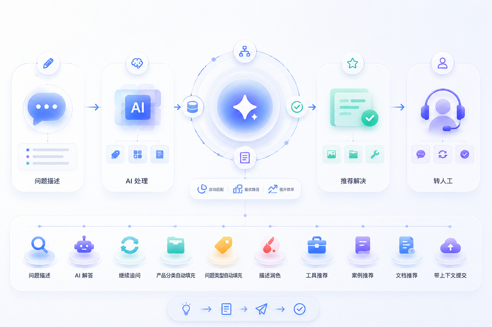
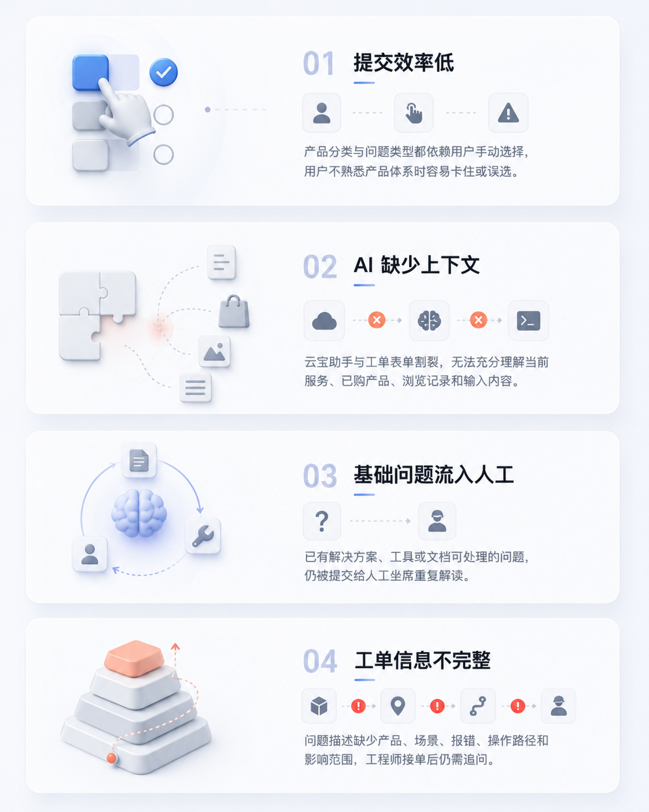

自动填充分类
根据问题内容、已购服务、当前页面和浏览记录，自动填充产品分类与问题类型。
支持与服务升级
围绕云服务新建工单场景，重构问题描述、AI 解答、分类填充和推荐内容之间的关系。用户只需要描述问题，系统自动填充产品分类与问题类型，并在提交前提供带上下文的 AI 解答、工具、案例和文档，帮助基础问题前置解决，复杂问题高效转人工。

01 项目背景
在云服务控制台中，用户遇到问题后通常会进入新建工单页面寻求支持。但现有流程要求用户手动选择产品分类和问题类型，分类层级多、判断成本高，用户还没有正式描述问题，就已经被表单选择消耗了大量时间。
页面虽然引入了云宝助手，但它更像独立聊天窗口，缺少当前服务、浏览记录、已购产品和工单输入内容的上下文。优化方向是把 AI 能力嵌入新建工单流程，让它参与分类填充、问题解答、描述润色和内容推荐。
核心问题：如何把分类判断和基础问题解答前置交给系统，让真正需要人工支持的问题更快、更完整地提交？

02 设计目标
根据问题内容、已购服务、当前页面和浏览记录，自动填充产品分类与问题类型。
在问题描述区增加 AI 解答按钮，帮助用户先尝试解决基础问题和常见问题。
按用户正在使用的云服务和输入内容，实时推荐相关工具、案例和文档。
AI 无法解决时，带着分类、描述、推荐尝试和上下文提交给匹配的在线工程师。
03 方案结构
新建工单不再只是表单录入页，而是问题分流入口。左侧聚焦问题描述和 AI 处理，负责自动填充分类、解答问题和润色描述；右侧根据上下文推荐工具、案例和文档。只有当这些内容无法解决问题时，用户再提交人工工单。
04 核心方案 1：AI 辅助新建工单
工单提交的优化重点不是改变填写顺序，而是把产品分类和问题类型的判断成本从用户侧转移到系统侧。用户输入问题后，AI 根据问题内容、已购服务、当前页面和浏览记录自动填充分类，并辅助润色描述。
05 核心方案 2：上下文 AI 解答与推荐
问题描述区增加 AI 解答按钮。用户输入问题后，可以主动调用带有上下文的 AI 继续追问；右侧推荐内容也会随输入实时变化，从通用助手转为与当前问题相关的工具、案例和文档推荐。
类核心智能能力
06 项目价值与沉淀
对用户，提交工单不再从复杂分类选择开始，而是围绕问题描述获得解答、推荐和自动补全。对服务团队，基础问题被前置解决，真正进入人工的工单也带有更完整的上下文。